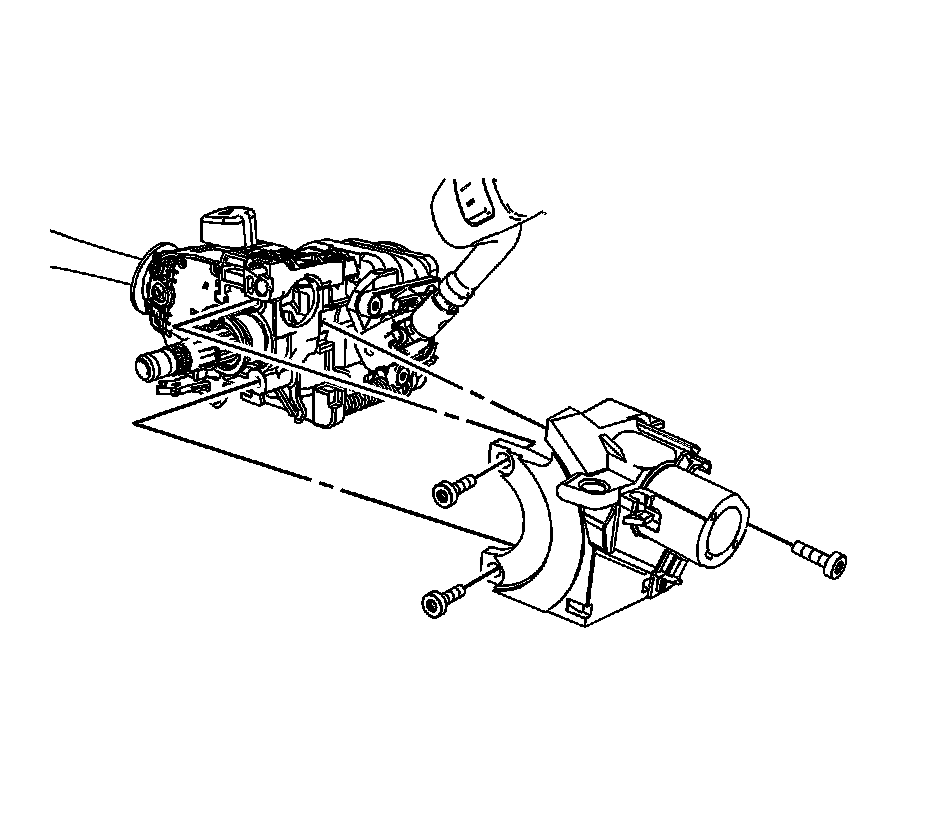

Ignition Lock Cylinder Case Replacement
Ignition Lock Cylinder Case Replacement
Removal Procedure
Caution: Disable the SIR system.
1. Remove the inflatable restraint steering wheel module coil.
2. Remove the ignition/start switch.
3. Remove the park lock cable from the lock cylinder housing.
4. Disconnect the passlock and key buzzer from the ignition lock cylinder case.

5. Remove the 3 ignition lock cylinder case screws (2).
6. Remove the ignition lock cylinder case (1) from the vehicle.
Installation Procedure
1. Install the igntion lock cylinder case (1) to the vehicle.
Notice: Refer to Fastener Notice.
2. Install the 3 ignition lock cylinder case screws (2).
Tighten
Tighten the screws to 7 N.m (62 lb in).
3. Install the park lock cable into the lock cylinder housing.
4. Connect the passlock and key buzzer to the ignition lock cylinder case.
5. Install the ignition/start switch.
6. Install the inflatable restraint steering wheel module coil.